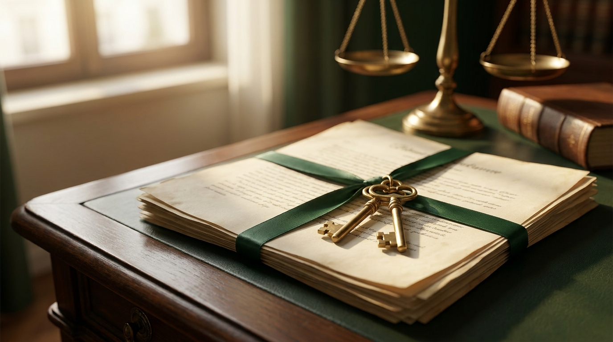

Conto cointestato: il cointestatario può svuotarlo se non ha versato nulla?
La Corte di Cassazione torna sul conto corrente cointestato e fissa un punto netto: chi non ha versato denaro non può prelevare l'intero saldo. La presunzione di pari comproprietà tra intestatari cede quando si dimostra che i fondi provengono da un solo soggetto. Una pronuncia che incide su coniugi, conviventi ed eredi.

Il fatto
Un conto corrente cointestato non è una proprietà automaticamente divisa a metà. È questo il cuore della recente lettura offerta dalla Corte di Cassazione: il cointestatario che non ha mai versato somme proprie non può svuotare il conto appropriandosi dell'intero saldo. Se lo fa, il prelievo è illegittimo e l'altro intestatario può agire per la restituzione.
La questione si ripropone con frequenza tra coniugi in crisi, conviventi che si separano ed eredi che scoprono movimenti sospetti dopo la morte del titolare effettivo dei fondi.
Inquadramento normativo
Due norme reggono la materia. L'art. 1854 del codice civile stabilisce che, nei rapporti bancari intestati a più persone con facoltà di operare in modo disgiunto, gli intestatari sono considerati creditori o debitori in solido verso la banca. In parole semplici: ciascuno può prelevare l'intero saldo nei confronti dell'istituto di credito.
Questo, però, riguarda solo il rapporto esterno con la banca. I rapporti interni tra i cointestatari sono governati dall'art. 1298 c.c., secondo cui le quote si presumono uguali "se non risulta diversamente". La parola chiave è proprio questa: *se non risulta diversamente*.
La presunzione di parità è quindi superabile con prova contraria. Chi sostiene di essere l'unico titolare effettivo del denaro può dimostrare la provenienza esclusiva dei versamenti: bonifici riconducibili a un solo soggetto, accrediti di stipendio o pensione, atti di vendita, eredità. Provata l'origine, la presunzione di comproprietà al 50% non opera più.
Cosa cambia in concreto
La distinzione tra rapporto esterno e rapporto interno produce conseguenze pratiche rilevanti.
Verso la banca, il cointestatario disgiunto può legittimamente prelevare tutto: l'istituto che esegue l'operazione non risponde di nulla. Il problema nasce tra i cointestatari. Chi ha incassato somme che non gli appartenevano deve restituirle al titolare effettivo dei fondi.
Il caso tipico è quello del conto alimentato solo da un coniuge, mentre l'altro figura come semplice cointestatario per comodità operativa. In sede di separazione o divorzio, il prelievo integrale da parte del coniuge non contribuente espone a una richiesta di restituzione.
Analoga è la situazione degli eredi. Se il defunto era l'unico ad alimentare il conto, il cointestatario superstite non può trattenere l'intero saldo: la quota eccedente la sua effettiva titolarità rientra nell'asse ereditario e va divisa tra i coeredi.
Resta centrale il tema dell'onere della prova. Chi contesta il prelievo deve dimostrare la provenienza esclusiva delle somme. Senza documentazione, riemerge la presunzione di parità e la restituzione si limita, al massimo, alla metà.
Cosa fare in concreto
- Conserva la tracciabilità dei versamenti. Estratti conto, bonifici, accrediti di stipendio e atti di provenienza sono la prova decisiva per superare la presunzione di parità.
- Verifica la modalità di firma del conto. Distingui tra firma congiunta e disgiunta: nel secondo caso ciascun intestatario può operare da solo, con i rischi che ne derivano.
- Se temi un prelievo abusivo, intervieni subito. Valuta la modifica delle modalità operative o la chiusura del conto cointestato, formalizzando l'operazione con l'istituto.
- In caso di successione, ricostruisci la provenienza dei fondi prima di considerare il saldo come acquisito: la quota eccedente la titolarità reale può appartenere all'asse ereditario.
- Documenta ogni richiesta di restituzione per iscritto, indicando importi e causale, così da interrompere eventuali termini e precostituire prova.
Consigliamo di non sottovalutare la gestione documentale: in questa materia vince chi è in grado di provare l'origine del denaro, non chi semplicemente compare come intestatario.
---
*Contributo informativo a cura di Tamburro & Partners - Avv. Giuseppe Tamburro. Non costituisce parere legale.*
Ogni contratto ha il suo equilibrio.
Se vuoi una revisione delle clausole o una redazione su misura, scrivi allo studio. Ti rispondiamo entro un giorno lavorativo.